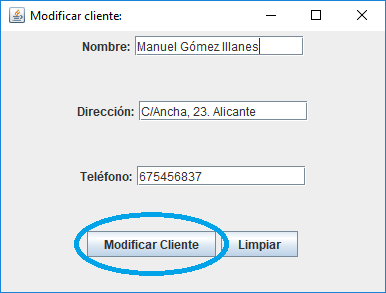
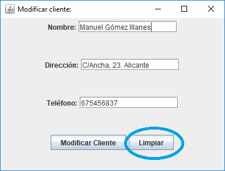

Aquí tenemos las distintas opciones de los clientes. En función de la seleccionada podremos trabajar con los clientes de distinta forma.

Para añadir clientes se nos mostrará este pequeño menú.

En nombre, colocaremos el nombre del cliente que queramos añadir.
En dirección, colocaremos la dirección del cliente que vayamos a añadir.
En teléfono, colocaremos el teléfono del cliente que vamos a añadir.
Para añadir al cliente pulsaremos sobre el botón Crear Cliente.

Para vaciar los cuadros de texto pulsaremoss sobre Limpiar.

Cuando añadamos al cliente se nos mostrará un diálogo en el que nos dará por correcto el alta.

Para modificar clientes se nos mostrará un pequeño menú con un selector para seleccionar el cliente que queramos modificar.


Aquí tenemos ahora el cliente seleccionado para su modificación en este pequeño menú. Para cambiar sus datos modificaremos en los diferentes cuadros de texto que nos encontramos.

En nombre,encontramos el nombre actual del cliente y podremos modificarlo.
En dirección, encontramos la dirección actual del cliente y podremos modificarla.
En teléfono, encontramos el número de teléfono actual del cliente y podremos modificarlo.
Para guardar los cambios deberemos pulsar sobre el botón Modificar Cliente.
Para limpiar los campos usaremos el botón de Limpiar.
Para eliminar clientes, se nos mostrará un diálogo con un selector para seleccionar al cliente a eliminar.


Para eliminar el cliente que queramos pulsaremos sobre el botón eliminar cliente y se nos mostrará un diálogo que deberemos aceptar para que el cliente sea eliminado.

Si pulsamos en el menú sobre consultar clientes nos encontramos con una tabla en la que encontramos los clientes con todos sus datos.

Si pulsamos sobre el botón de Aceptar se nos cerrará la ventana.
Si pulsamos sobre imprimir PDF nos creará un pdf con una tabla en la que encontramos todos los clientes.